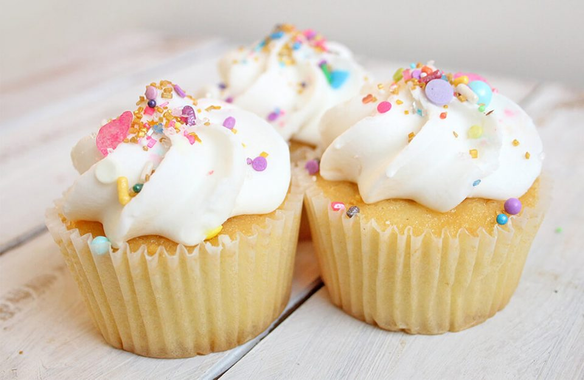

Cupcakes
Descripm
While cake itself in some form or another has been around since ancient times,
cupcakes first came about in America.
It is thought that the first ever reference to a cake to be baked in small cups,
rather than as a layer cake, was in Amelia Simmons American Cookery in 1796. The
first reference to the word cupcake is said to be from a 19th century American
author named Eliza Leslie in her cookbook Receipts. Font: The hummingbird bakery
Ingredients
- 1 (12 fluid ounce) can or bottle Irish stout beer (such as Guinness®)
- ½ cup milk
- ½ cup vegetable oil
- 1 tablespoon vanilla extract
- 3 large eggs
- ¾ cup sour cream
- 2 ½ cups all-purpose flour
- 2 cups white sugar
- ¾ cup unsweetened cocoa powder
- 1 ½ teaspoons baking soda
Steps
- Preheat the oven to 350 degrees F (175 degrees C). Grease two 12-cup
muffin tins or line cups with paper liners.
- Whisk stout beer, milk, vegetable oil, and vanilla extract together in
a bowl until evenly blended. Beat in eggs 1 at a time, beating well
after each addition. Mix in sour cream. Whisk together flour, sugar,
cocoa powder, and baking soda in a separate bowl. Gradually mix the
flour mixture ingredients into the beer mixture.
- Spoon cupcake batter into the prepared muffin cups, filling each 3/4 full.
- Bake in the preheated oven until cupcakes are risen and set in the
middle but still soft and tender, about 25 minutes. Cool in the tins,
then transfer to a wire rack to cool completely, about 1 hour.
- Whisk cocoa powder and stout beer together in a bowl. Beat in butter
and cream cheese using an electric mixer until well combined. Gradually
beat in confectioners' sugar, 1 cup at a time, until frosting has
desired sweetness. Spread or pipe frosting onto cooked cupcakes.